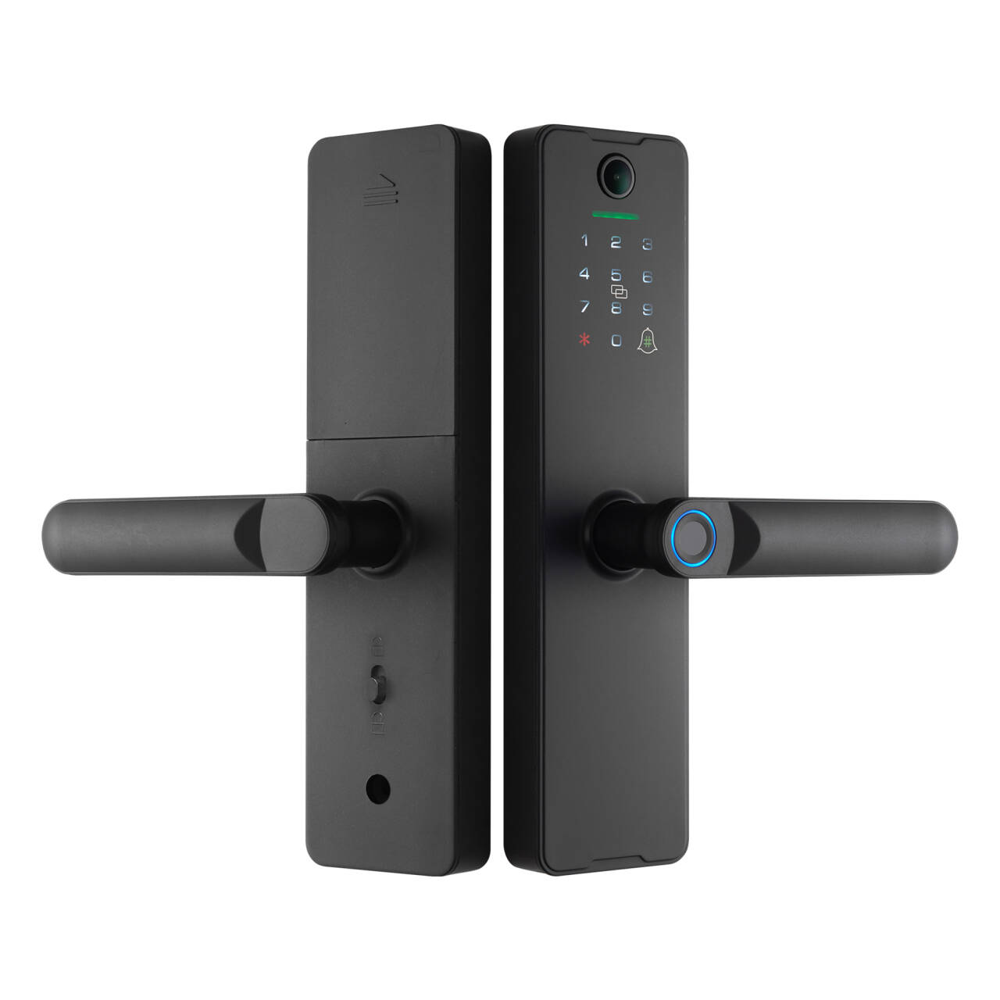

The next-generation WF-X8 combines remote unlock, high-precision semiconductor fingerprint recognition and multiple entry modes in one device, purpose-built for homes, apartments, offices, hotels and school dormitories worldwide. This article covers the X8’s technical highlights, performance edges and application value.

1. Remote-unlock technology & smart-home integration
WF-X8 supports Tuya Wi-Fi for true remote smart control:
- Remote unlock authorisation: generate one-time or timed PINs for visitors via the mobile APP
- Real-time status monitoring: check lock state, entry log and battery level at any time
- Smart-scene linkage: seamless connection to smart-home ecosystems to trigger “arrival” mode automatically
- Multi-user management: graded family-member permissions keep usage safe
Both the X8 peephole and X8 Wi-Fi versions offer a nine-language interface to satisfy worldwide demand.
2. High-precision semiconductor fingerprint recognition
WF-X8 uses advanced semiconductor fingerprint technology with outstanding specs:
- Ultra-fast scan: capture & match in <0.5 s for instant entry
- Extreme accuracy: FAR <0.001 %, FRR <0.01 % – well above industry norms
- Large capacity: stores 100 fingerprints, enough for households and small offices
- Environmental range: -20 °C ~ 60 °C, 80 % RH – works in any climate
The semiconductor sensor prevents fake-finger attacks and features self-learning: accuracy improves with every use.
3. Five entry modes & security safeguards
WF-X8 offers five ways to open, covering every scenario:
- Fingerprint: high-precision semiconductor reader, safe & convenient
- PIN code: supports virtual PIN to prevent shoulder-surfing
- RFID card: ideal for seniors or children whose prints are faint
- Mechanical key: emergency override for absolute peace of mind
- Remote unlock: mobile APP control from anywhere
Strict testing shows >1 million cycles and 100,000-cycle MTBF for long-term reliability.
4. Global design & multi-scenario use
WF-X8 is engineered for the world:
- 10-language UI: meets users in their own language
- Modern minimalist look: international aesthetics match any décor
- Full-scenario coverage: home, apartment, office, hotel, dorm – one lock fits all
- DC supply: standard power input, worldwide compatible
The minimalist design balances function and form, upgrading overall home quality.
5. Cross-border e-commerce strengths & market performance
Built as a cross-border exclusive, WF-X8 offers clear competitive edges:
- Platform-ready: perfect for eBay, Amazon, AliExpress and other major platforms
- Global reach: already sold in Europe, South America, South-East Asia, North America and the Middle East
- Brand-authorisation support: overseas dealers receive licence to boost market presence
- Customisation service: OEM/ODM available for special regional requirements
Standardised packaging and “to-your-door” delivery optimise cross-border logistics.
6. Installation, use & after-sales
WF-X8 focuses on out-of-box convenience:
- Tool-free install: standard holes fit most doors, little modification needed
- Smart alerts: low-battery warning prevents lock-outs
- Clear guidance: detailed multi-language manual and video tutorials
- Quality assured: strict QC and long-life components for dependable operation